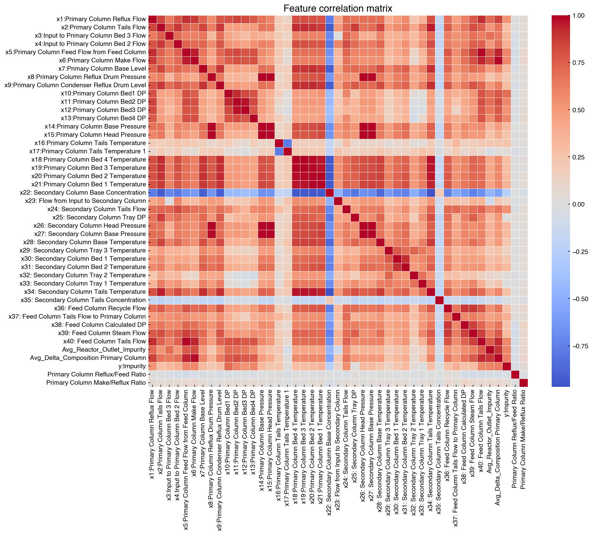
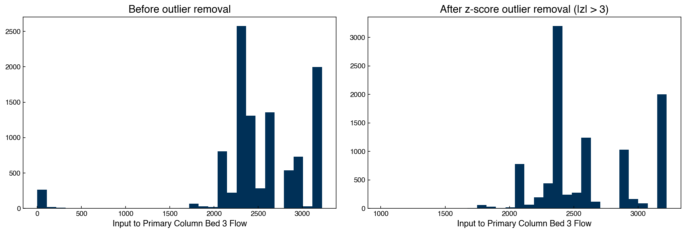
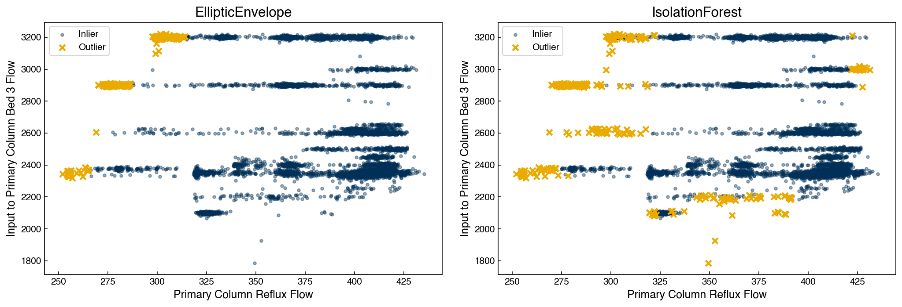

Data Organization#
Learning Objectives
By the end of this chapter, you will be able to:
Explain the tidy data principles and recognize tidy vs. untidy data structures
Index and filter a pandas DataFrame by column name, row label, and datetime range
Detect and handle missing values using dropping, imputation, and correlation analysis
Identify outliers with the z-score method and remove them systematically
Store and retrieve large datasets efficiently using HDF5 and Parquet formats
Explain the trade-offs between different missing-value strategies and storage formats
Data organization and management is a critical part of any data science project. Yet it is often underestimated: in practice, data scientists spend the majority of their time cleaning and preparing data rather than fitting models. Poor data management leads to silent errors that are hard to trace — wrong predictions built on corrupted inputs. Good data management, by contrast, creates a reproducible pipeline where every transformation is explicit and documented.
This chapter uses the Dow Chemical distillation column dataset: a real
industrial time-series with 12 sensor measurements (reflux flow, feed flow,
temperature, etc.) recorded at irregular intervals, along with a target variable
y:Impurity. The dataset contains the kinds of problems that appear routinely in
practice: inconsistent null representations, missing entries, and outliers.
Tidy Data Principles#
Before writing any code, it is worth establishing a mental framework for what well-organized data looks like. Wickham (2014) formalized the concept of tidy data, which defines a standard structure for analytical datasets:
Each variable forms a column. A variable is any quantity you measure or record — temperature, flow rate, class label, timestamp.
Each observation forms a row. One row = one measurement event (e.g., one timestamp in a time-series, one material in a materials dataset).
Each type of observational unit forms a separate table. Don’t mix patient demographics with lab measurements in the same table; keep them separate and join on a key when needed.
Data that violates these rules is called untidy (or “messy”). Common untidy patterns include:
Column headers that are values, not variable names (e.g., months as column headers instead of a
monthcolumn)Multiple variables stored in one column (e.g.,
"glucose/insulin")Multiple observational units in one table (sensor metadata mixed with readings)
Variables stored in both rows and columns (wide vs. long confusion)
The Dow dataset is already tidy: each row is one timestamped reading, each column is one sensor or the target variable. Most pandas operations — filtering, groupby, merge, pivot — assume tidy data implicitly, so arriving in tidy form avoids many downstream headaches.
When data arrives in untidy form, pd.melt() (wide → long) and pd.pivot()
(long → wide) are the primary reshape tools. For example, if temperature readings
for three sensors arrived as three separate columns (T_sensor1, T_sensor2,
T_sensor3), melting would convert them to a long format with a sensor_id
column and a single temperature column — enabling a single groupby operation
instead of three separate code paths.
Exercise 64
After loading df, print df.dtypes and df.isnull().sum() to perform a basic
data validation check. Then answer: does the Dow DataFrame satisfy all three tidy
data rules? Identify one potential violation (hint: think about what each column
represents and whether the Date column is a variable or an index).
Note
Data validation is a closely related concern. After loading data, it is
good practice to programmatically assert that the data meets your expectations:
column types are correct, values fall within physically plausible ranges, and
no unexpected null values exist. Checking df.dtypes, df.describe(), and
df.isnull().sum() immediately after loading is a minimal validation step.
For production pipelines, libraries like pandera (schema-based validation
for DataFrames) and great_expectations (expectation suites for large data)
provide systematic validation frameworks, though they are beyond the scope of
this course.
%matplotlib inline
import numpy as np
import pandas as pd
import matplotlib.pyplot as plt
import seaborn as sns
plt.style.use('../settings/plot_style.mplstyle')
clrs = np.array(['#003057', '#EAAA00', '#4B8B9B', '#B3A369', '#377117',
'#1879DB', '#8E8B76', '#F5D580', '#002233'])
df = pd.read_excel('data/impurity_dataset-training.xlsx')
df.head(3)
| Date | x1:Primary Column Reflux Flow | x2:Primary Column Tails Flow | x3:Input to Primary Column Bed 3 Flow | x4:Input to Primary Column Bed 2 Flow | x5:Primary Column Feed Flow from Feed Column | x6:Primary Column Make Flow | x7:Primary Column Base Level | x8:Primary Column Reflux Drum Pressure | x9:Primary Column Condenser Reflux Drum Level | ... | x36: Feed Column Recycle Flow | x37: Feed Column Tails Flow to Primary Column | x38: Feed Column Calculated DP | x39: Feed Column Steam Flow | x40: Feed Column Tails Flow | Avg_Reactor_Outlet_Impurity | Avg_Delta_Composition Primary Column | y:Impurity | Primary Column Reflux/Feed Ratio | Primary Column Make/Reflux Ratio | |
|---|---|---|---|---|---|---|---|---|---|---|---|---|---|---|---|---|---|---|---|---|---|
| 0 | 2015-12-01 00:00:00 | 327.813 | 45.7920 | 2095.06 | 2156.01 | 98.5005 | 95.4674 | 54.3476 | 41.0121 | 52.2353 | ... | 62.8707 | 45.0085 | 66.6604 | 8.68813 | 99.9614 | 5.38024 | 1.49709 | 1.77833 | 3.32803 | 0.291226 |
| 1 | 2015-12-01 01:00:00 | 322.970 | 46.1643 | 2101.00 | 2182.90 | 98.0014 | 94.9673 | 54.2247 | 41.0076 | 52.5378 | ... | 62.8651 | 45.0085 | 66.5496 | 8.70683 | 99.8637 | 5.33345 | 1.51392 | 1.76964 | 3.29556 | 0.294044 |
| 2 | 2015-12-01 02:00:00 | 319.674 | 45.9927 | 2102.96 | 2151.39 | 98.8229 | 96.0785 | 54.6130 | 41.0451 | 52.0159 | ... | 62.8656 | 45.0085 | 66.0599 | 8.69269 | 100.2490 | 5.37677 | 1.50634 | 1.76095 | 3.23481 | 0.300552 |
3 rows × 46 columns
print(f'Shape: {df.shape}')
print(f'Columns: {list(df.columns)}')
print(f'Date range: {df["Date"].min()} → {df["Date"].max()}')
Shape: (10703, 46)
Columns: ['Date', 'x1:Primary Column Reflux Flow', 'x2:Primary Column Tails Flow', 'x3:Input to Primary Column Bed 3 Flow', 'x4:Input to Primary Column Bed 2 Flow', 'x5:Primary Column Feed Flow from Feed Column', 'x6:Primary Column Make Flow', 'x7:Primary Column Base Level', 'x8:Primary Column Reflux Drum Pressure', 'x9:Primary Column Condenser Reflux Drum Level', 'x10:Primary Column Bed1 DP', 'x11:Primary Column Bed2 DP', 'x12:Primary Column Bed3 DP', 'x13:Primary Column Bed4 DP', 'x14:Primary Column Base Pressure', 'x15:Primary Column Head Pressure', 'x16:Primary Column Tails Temperature', 'x17:Primary Column Tails Temperature 1', 'x18:Primary Column Bed 4 Temperature', 'x19:Primary Column Bed 3 Temperature', 'x20:Primary Column Bed 2 Temperature', 'x21:Primary Column Bed 1 Temperature', 'x22: Secondary Column Base Concentration', 'x23: Flow from Input to Secondary Column', 'x24: Secondary Column Tails Flow', 'x25: Secondary Column Tray DP', 'x26: Secondary Column Head Pressure', 'x27: Secondary Column Base Pressure', 'x28: Secondary Column Base Temperature', 'x29: Secondary Column Tray 3 Temperature', 'x30: Secondary Column Bed 1 Temperature', 'x31: Secondary Column Bed 2 Temperature', 'x32: Secondary Column Tray 2 Temperature', 'x33: Secondary Column Tray 1 Temperature', 'x34: Secondary Column Tails Temperature', 'x35: Secondary Column Tails Concentration', 'x36: Feed Column Recycle Flow', 'x37: Feed Column Tails Flow to Primary Column', 'x38: Feed Column Calculated DP', 'x39: Feed Column Steam Flow', 'x40: Feed Column Tails Flow', 'Avg_Reactor_Outlet_Impurity', 'Avg_Delta_Composition Primary Column', 'y:Impurity', 'Primary Column Reflux/Feed Ratio', 'Primary Column Make/Reflux Ratio']
Date range: 2015-12-01 00:00:00 → 2017-02-18 23:00:00
Pandas Indexing and Filtering#
Pandas provides flexible tools for selecting subsets of data. Understanding the distinction between label-based and position-based indexing is essential for avoiding subtle bugs.
Column access — use the column name directly:
df['x5:Primary Column Feed Flow from Feed Column'].head()
0 98.5005
1 98.0014
2 98.8229
3 98.7733
4 99.3231
Name: x5:Primary Column Feed Flow from Feed Column, dtype: float64
Label-based indexing with .loc — selects by the row label (which is the
index value, not necessarily the position) and the column name:
df.loc[0, 'x1:Primary Column Reflux Flow']
np.float64(327.813)
Position-based indexing with .iloc — zero-based integer positions regardless
of the index:
# .iloc always uses integer positions, even after filtering
df.iloc[0, 1]
np.float64(327.813)
Filtering with Boolean Masks#
Logical conditions return a boolean Series that can be used to select rows:
mask = df['x1:Primary Column Reflux Flow'] > 350
df_high_reflux = df[mask]
print(f'Rows with reflux > 350: {len(df_high_reflux)} of {len(df)}')
df_high_reflux.head(3)
Rows with reflux > 350: 7783 of 10703
| Date | x1:Primary Column Reflux Flow | x2:Primary Column Tails Flow | x3:Input to Primary Column Bed 3 Flow | x4:Input to Primary Column Bed 2 Flow | x5:Primary Column Feed Flow from Feed Column | x6:Primary Column Make Flow | x7:Primary Column Base Level | x8:Primary Column Reflux Drum Pressure | x9:Primary Column Condenser Reflux Drum Level | ... | x36: Feed Column Recycle Flow | x37: Feed Column Tails Flow to Primary Column | x38: Feed Column Calculated DP | x39: Feed Column Steam Flow | x40: Feed Column Tails Flow | Avg_Reactor_Outlet_Impurity | Avg_Delta_Composition Primary Column | y:Impurity | Primary Column Reflux/Feed Ratio | Primary Column Make/Reflux Ratio | |
|---|---|---|---|---|---|---|---|---|---|---|---|---|---|---|---|---|---|---|---|---|---|
| 344 | 2015-12-15 08:00:00 | 355.568 | 46.9836 | 2106.18 | 2225.30 | 106.791 | 94.5449 | 56.9560 | 40.9934 | 42.5425 | ... | 62.8903 | 45.0081 | 63.4973 | 8.69603 | 108.205 | 5.38451 | 1.49738 | 1.33011 | 3.32956 | 0.265898 |
| 345 | 2015-12-15 09:00:00 | 356.849 | 46.9644 | 2098.27 | 2346.54 | 107.766 | 94.5820 | 54.3408 | 41.0075 | 50.8012 | ... | 62.8979 | 45.0081 | 65.5930 | 8.69628 | 109.183 | 5.41354 | 1.50475 | 1.35155 | 3.31133 | 0.265048 |
| 346 | 2015-12-15 10:00:00 | 356.463 | 46.9907 | 2106.27 | 2257.58 | 110.593 | 94.6967 | 52.9045 | 41.0123 | 54.5137 | ... | 62.8989 | 45.0085 | 65.1747 | 8.70460 | 111.993 | 5.39209 | 1.51684 | 1.46104 | 3.22320 | 0.265656 |
3 rows × 46 columns
Note
After filtering, the row index retains the original labels (e.g., rows 5, 8, 11…).
Use .iloc rather than .loc for position-based access on filtered DataFrames to
avoid KeyError. Alternatively, call .reset_index(drop=True) to re-number
from zero.
Renaming Columns#
Long column names improve readability in the raw data but are cumbersome to type in code. A renaming dictionary maps old names to short aliases:
columns = df.columns
# Keep the short prefix before ':' (e.g. 'x1:Primary Column Reflux Flow' → 'x1')
new_columns = {ci: ci.split(':', 1)[0] if ':' in ci else ci for ci in columns}
df_shortnames = df.rename(columns=new_columns)
df_shortnames.head(3)
| Date | x1 | x2 | x3 | x4 | x5 | x6 | x7 | x8 | x9 | ... | x36 | x37 | x38 | x39 | x40 | Avg_Reactor_Outlet_Impurity | Avg_Delta_Composition Primary Column | y | Primary Column Reflux/Feed Ratio | Primary Column Make/Reflux Ratio | |
|---|---|---|---|---|---|---|---|---|---|---|---|---|---|---|---|---|---|---|---|---|---|
| 0 | 2015-12-01 00:00:00 | 327.813 | 45.7920 | 2095.06 | 2156.01 | 98.5005 | 95.4674 | 54.3476 | 41.0121 | 52.2353 | ... | 62.8707 | 45.0085 | 66.6604 | 8.68813 | 99.9614 | 5.38024 | 1.49709 | 1.77833 | 3.32803 | 0.291226 |
| 1 | 2015-12-01 01:00:00 | 322.970 | 46.1643 | 2101.00 | 2182.90 | 98.0014 | 94.9673 | 54.2247 | 41.0076 | 52.5378 | ... | 62.8651 | 45.0085 | 66.5496 | 8.70683 | 99.8637 | 5.33345 | 1.51392 | 1.76964 | 3.29556 | 0.294044 |
| 2 | 2015-12-01 02:00:00 | 319.674 | 45.9927 | 2102.96 | 2151.39 | 98.8229 | 96.0785 | 54.6130 | 41.0451 | 52.0159 | ... | 62.8656 | 45.0085 | 66.0599 | 8.69269 | 100.2490 | 5.37677 | 1.50634 | 1.76095 | 3.23481 | 0.300552 |
3 rows × 46 columns
Datetime Indexing#
When a column contains timestamps, setting it as the index enables natural slice-based time selection:
df_dt = df_shortnames.set_index('Date')
df_dt.head(3)
| x1 | x2 | x3 | x4 | x5 | x6 | x7 | x8 | x9 | x10 | ... | x36 | x37 | x38 | x39 | x40 | Avg_Reactor_Outlet_Impurity | Avg_Delta_Composition Primary Column | y | Primary Column Reflux/Feed Ratio | Primary Column Make/Reflux Ratio | |
|---|---|---|---|---|---|---|---|---|---|---|---|---|---|---|---|---|---|---|---|---|---|
| Date | |||||||||||||||||||||
| 2015-12-01 00:00:00 | 327.813 | 45.7920 | 2095.06 | 2156.01 | 98.5005 | 95.4674 | 54.3476 | 41.0121 | 52.2353 | 6.86666 | ... | 62.8707 | 45.0085 | 66.6604 | 8.68813 | 99.9614 | 5.38024 | 1.49709 | 1.77833 | 3.32803 | 0.291226 |
| 2015-12-01 01:00:00 | 322.970 | 46.1643 | 2101.00 | 2182.90 | 98.0014 | 94.9673 | 54.2247 | 41.0076 | 52.5378 | 6.70838 | ... | 62.8651 | 45.0085 | 66.5496 | 8.70683 | 99.8637 | 5.33345 | 1.51392 | 1.76964 | 3.29556 | 0.294044 |
| 2015-12-01 02:00:00 | 319.674 | 45.9927 | 2102.96 | 2151.39 | 98.8229 | 96.0785 | 54.6130 | 41.0451 | 52.0159 | 6.75303 | ... | 62.8656 | 45.0085 | 66.0599 | 8.69269 | 100.2490 | 5.37677 | 1.50634 | 1.76095 | 3.23481 | 0.300552 |
3 rows × 45 columns
# Slice a single day by string — pandas parses the date automatically
df_oneday = df_dt['2015-12-02':'2015-12-03']
print(f'Rows for Dec 2–3: {len(df_oneday)}')
df_oneday.head()
Rows for Dec 2–3: 48
| x1 | x2 | x3 | x4 | x5 | x6 | x7 | x8 | x9 | x10 | ... | x36 | x37 | x38 | x39 | x40 | Avg_Reactor_Outlet_Impurity | Avg_Delta_Composition Primary Column | y | Primary Column Reflux/Feed Ratio | Primary Column Make/Reflux Ratio | |
|---|---|---|---|---|---|---|---|---|---|---|---|---|---|---|---|---|---|---|---|---|---|
| Date | |||||||||||||||||||||
| 2015-12-02 00:00:00 | 323.630 | 45.9895 | 2090.74 | 2000.88 | 97.5097 | 94.6134 | 54.3864 | 40.9887 | 53.4909 | 6.65892 | ... | 62.8554 | 45.0085 | 69.6167 | 8.70131 | 100.1880 | 5.33656 | 1.51034 | 1.7 | 3.31896 | 0.292350 |
| 2015-12-02 01:00:00 | 320.692 | 45.9209 | 2103.25 | 2205.99 | 98.0965 | 94.3998 | 54.7446 | 41.0217 | 52.7459 | 6.66100 | ... | 62.8660 | 45.0085 | 66.2716 | 8.69119 | 99.7040 | 5.31553 | 1.50241 | 1.7 | 3.26915 | 0.294362 |
| 2015-12-02 02:00:00 | 324.106 | 45.9746 | 2101.29 | 2133.55 | 97.5244 | 94.0895 | 54.4040 | 40.9934 | 52.7559 | 6.64161 | ... | 62.8703 | 45.0085 | 67.2306 | 8.71408 | 99.8338 | 5.24362 | 1.53346 | 1.7 | 3.32333 | 0.290305 |
| 2015-12-02 03:00:00 | 326.294 | 45.9891 | 2092.47 | 2121.73 | 98.7282 | 95.2893 | 54.6625 | 41.0028 | 53.2196 | 6.73669 | ... | 62.8775 | 45.0068 | 67.6458 | 8.68745 | 100.1720 | 5.31019 | 1.51950 | 1.7 | 3.30497 | 0.292035 |
| 2015-12-02 04:00:00 | 327.563 | 46.3352 | 2094.37 | 1242.92 | 98.1270 | 95.7709 | 55.0713 | 41.0121 | 52.6452 | 6.87839 | ... | 62.8775 | 45.0068 | 66.7606 | 8.69975 | 99.4970 | 5.35622 | 1.56088 | 1.7 | 3.33815 | 0.292374 |
5 rows × 45 columns
Datetime string parsing in pandas is flexible — you can pass full timestamps
('2015-12-02 08:30:00'), just dates ('2015-12-02'), or even just years
('2015'), and pandas will interpret the slice boundaries appropriately.
The underlying NumPy array is always accessible via .values:
X_oneday = df_oneday.values
print(f'Array shape: {X_oneday.shape}, dtype: {X_oneday.dtype}')
Array shape: (48, 45), dtype: object
Demonstration: Extracting a Labeled Subset#
The code below extracts a clean numeric subset for a specific date range, keeping only the 12 sensor features (x1–x12):
df_subset = (df_shortnames
.set_index('Date')['2015-12-05':'2015-12-12']
.loc[:, 'x1':'x12'])
print(f'Subset shape: {df_subset.shape}')
df_subset.head()
Subset shape: (192, 12)
| x1 | x2 | x3 | x4 | x5 | x6 | x7 | x8 | x9 | x10 | x11 | x12 | |
|---|---|---|---|---|---|---|---|---|---|---|---|---|
| Date | ||||||||||||
| 2015-12-05 00:00:00 | 329.358 | 47.0331 | 2104.92 | 1315.580 | 99.0892 | 96.2604 | 54.6870 | 40.9981 | 53.0726 | 6.84301 | 10.9171 | 8.78048 |
| 2015-12-05 01:00:00 | 328.920 | 47.0293 | 2097.57 | 1539.210 | 98.7808 | 96.1749 | 54.8310 | 40.9981 | 53.1708 | 6.83059 | 10.9171 | 8.96238 |
| 2015-12-05 02:00:00 | 328.865 | 47.0067 | 2097.19 | 958.648 | 98.8306 | 96.4169 | 54.6821 | 40.9745 | 53.0965 | 6.87476 | 10.9171 | 8.68794 |
| 2015-12-05 03:00:00 | 329.147 | 47.0218 | 2094.45 | 2041.020 | 98.9853 | 96.0839 | 54.6797 | 41.0169 | 53.0947 | 6.83088 | 11.1733 | 8.94487 |
| 2015-12-05 04:00:00 | 329.256 | 47.0370 | 2096.78 | 1984.860 | 98.4337 | 96.1642 | 54.6318 | 40.9981 | 53.1643 | 6.80179 | 10.9171 | 8.68794 |
Exercise 65
Using df_shortnames, create a filtered DataFrame that satisfies all three
conditions simultaneously:
Date between
2015-12-10and2015-12-20x1(Reflux Flow) greater than 300Only keep columns
x1throughx6andy
Print the shape of the result and display the first five rows.
Data Quality#
Detecting Missing Values#
Missing values in real industrial datasets rarely appear as clean NaN. Operators
may enter a placeholder like 0, -999, or — as in this dataset — an exclamation
mark ! to flag a sensor alarm or out-of-range reading. These must be identified
before any numerical computation, because a string mixed into a numeric column will
silently convert the whole column to object dtype.
nondate_cols = df.columns[1:] # everything except 'Date'
print(f'Column dtypes:\n{df[nondate_cols].dtypes.value_counts()}')
Column dtypes:
float64 44
object 1
Name: count, dtype: int64
The object dtype signals that at least some values are non-numeric. We can find
the offending rows using pd.isnull:
df[pd.isnull(df).any(axis=1)].head(3)
| Date | x1:Primary Column Reflux Flow | x2:Primary Column Tails Flow | x3:Input to Primary Column Bed 3 Flow | x4:Input to Primary Column Bed 2 Flow | x5:Primary Column Feed Flow from Feed Column | x6:Primary Column Make Flow | x7:Primary Column Base Level | x8:Primary Column Reflux Drum Pressure | x9:Primary Column Condenser Reflux Drum Level | ... | x36: Feed Column Recycle Flow | x37: Feed Column Tails Flow to Primary Column | x38: Feed Column Calculated DP | x39: Feed Column Steam Flow | x40: Feed Column Tails Flow | Avg_Reactor_Outlet_Impurity | Avg_Delta_Composition Primary Column | y:Impurity | Primary Column Reflux/Feed Ratio | Primary Column Make/Reflux Ratio | |
|---|---|---|---|---|---|---|---|---|---|---|---|---|---|---|---|---|---|---|---|---|---|
| 490 | 2015-12-21 10:00:00 | 366.263 | 47.0246 | 2100.16 | 2222.75 | 110.189 | 96.0753 | 54.3922 | 41.0122 | 54.1885 | ... | 62.8911 | 45.0085 | 64.5294 | 8.70778 | 111.523 | 5.13314 | NaN | 1.66293 | 3.32396 | 0.262312 |
| 491 | 2015-12-21 11:00:00 | 367.940 | 46.9454 | 2101.25 | 1945.08 | 111.314 | 96.3701 | 54.7842 | 41.0264 | 53.3218 | ... | 62.8877 | 45.0085 | 66.3464 | 8.70857 | 112.389 | 5.06810 | NaN | 1.65844 | 3.30541 | 0.261918 |
| 623 | 2015-12-26 23:00:00 | 348.703 | 46.9077 | 2096.92 | 2255.57 | 107.803 | 91.1505 | 54.7803 | 41.0499 | 52.5548 | ... | 62.8911 | 45.0085 | 66.2981 | 8.69761 | 109.224 | 4.57842 | NaN | 1.70000 | 3.23465 | 0.261399 |
3 rows × 46 columns
To also catch non-null but non-numeric entries like !, we write a custom checker:
def is_real_and_finite(x):
try:
val = float(x)
return np.isfinite(val)
except (TypeError, ValueError):
return False
# Apply element-wise — compatible with all pandas versions
numeric_map = df[nondate_cols].apply(lambda col: col.map(is_real_and_finite))
print(f'Fully numeric rows: {numeric_map.all(axis=1).sum()} of {len(df)}')
Fully numeric rows: 10297 of 10703
Dropping Observations#
When the proportion of problematic rows is small, dropping them is the simplest
strategy. The numeric_map boolean DataFrame lets us select only fully numeric rows:
real_rows = numeric_map.all(axis=1).values
df_dropped = df[real_rows].copy()
X = df_dropped.loc[:, nondate_cols].values.astype('float')
print(f'After dropping bad rows: {df_dropped.shape} (lost {len(df)-len(df_dropped)} rows)')
After dropping bad rows: (10297, 46) (lost 406 rows)
Dropping Features by Correlation#
Not all columns are equally valuable. A feature that is almost perfectly correlated with another is redundant — it adds noise to some models (e.g., ordinary least squares) without adding information.
# Columns still have object dtype after filtering; cast explicitly for corr
numeric_only = df_dropped.iloc[:, 1:].apply(pd.to_numeric, errors='coerce')
corr = numeric_only.corr()
fig, ax = plt.subplots(figsize=(14, 12))
sns.heatmap(corr, ax=ax, cmap='coolwarm', center=0,
linewidths=0.3, annot=False)
ax.set_title('Feature correlation matrix')
plt.tight_layout()
plt.show()

target_col = 'Avg_Delta_Composition Primary Column'
high_corr = corr[target_col][corr[target_col] > 0.95]
print(f'Features highly correlated with "{target_col}":\n{high_corr}')
Features highly correlated with "Avg_Delta_Composition Primary Column":
x6:Primary Column Make Flow 0.977973
Avg_Delta_Composition Primary Column 1.000000
Name: Avg_Delta_Composition Primary Column, dtype: float64
Primary Column Make Flow is essentially a linear proxy for
Avg_Delta_Composition Primary Column, so we can safely drop the latter without
losing predictive information. In general, keeping both highly correlated features
can cause numerical instability in models that invert the feature matrix (e.g., OLS)
and can make regularization hyperparameter tuning less interpretable.
df_no_avg = df_dropped.drop(columns=[target_col])
print(f'Shape after dropping redundant column: {df_no_avg.shape}')
Shape after dropping redundant column: (10297, 45)
Imputation#
Sometimes dropping rows or columns discards too much data. Imputation fills in missing values using information from the rest of the dataset.
A simple approach uses the linear relationship between two correlated features to predict the missing values in one from the other:
from sklearn.linear_model import LinearRegression
# Predict Avg_Delta_Composition from x6 (Make Flow) — high corr seen above
x_train = pd.to_numeric(df_dropped['x6:Primary Column Make Flow']).values.reshape(-1, 1)
y_train = pd.to_numeric(df_dropped['Avg_Delta_Composition Primary Column']).values
reg = LinearRegression().fit(x_train, y_train)
print(f'R² for imputation model: {reg.score(x_train, y_train):.3f}')
R² for imputation model: 0.956
Note
The choice of missing-value strategy has significant downstream effects on model performance. Dropping observations is safe when missingness is rare and random. Dropping features by correlation is justified when two columns are near-perfectly correlated. Imputation via regression is powerful but introduces model assumptions; always validate that the imputation model is accurate before using it. A common mistake is to fit an imputation model on the full dataset (including test data), which leaks future information into training. Fit imputation models only on training data.
Exercise 66
Using df_dropped, create a copy of the DataFrame where any NaN or non-numeric
value (after converting to float with pd.to_numeric(..., errors='coerce')) is
replaced with the column mean. Use DataFrame.fillna(). Print the count of
remaining null values to confirm the result is complete.
Note
Connecting cleaning to the modeling pipeline. Every cleaning step applied to
training data must be identically applied to any new data at inference time —
otherwise the model sees data in a different form than it was trained on. A common
mistake is to compute, say, the column mean for imputation on the full dataset
(including test rows) and then use that mean to fill training rows. This leaks
future information. sklearn.pipeline.Pipeline solves this cleanly: wrap each
cleaning step as a Transformer (with fit on training data only and transform
applied to both), and the pipeline ensures correct train/test separation
automatically. This pattern is not explored further here but is worth adopting in
any real project.
Outlier Detection#
The general definition of an outlier is a datapoint that was not created by the same underlying process. However, in practice this definition is not always helpful, since it requires knowledge of the mechanism that generated the data. We will not delve into advanced outlier detection methods here, but show a few simple examples that are commonly used in practice.
The Z-score Method#
An outlier is an observation that deviates unusually far from the bulk of the data. The z-score measures how many standard deviations a point is from the mean:
Points with \(|z_i| > z_\text{cutoff}\) (commonly 3) are flagged as outliers under the assumption that the data follows a Gaussian distribution.
# Demonstrate on a single column
col = 'x3:Input to Primary Column Bed 3 Flow'
xi = pd.to_numeric(df_dropped[col], errors='coerce').dropna()
mu, sigma = xi.mean(), xi.std()
z_cutoff = 3
z_scores = (xi - mu) / sigma
outlier_mask = z_scores.abs() > z_cutoff
xi_clean = xi[~outlier_mask]
print(f'Column: {col}')
print(f' Total rows: {len(xi)}')
print(f' Outliers: {outlier_mask.sum()}')
print(f' Retained: {len(xi_clean)}')
Column: x3:Input to Primary Column Bed 3 Flow
Total rows: 10297
Outliers: 307
Retained: 9990
fig, axes = plt.subplots(1, 2, figsize=(14, 5))
axes[0].hist(xi.values, bins=30)
axes[0].set_title('Before outlier removal')
axes[0].set_xlabel(col.split(':')[1])
axes[1].hist(xi_clean.values, bins=30)
axes[1].set_title('After z-score outlier removal (|z| > 3)')
axes[1].set_xlabel(col.split(':')[1])
plt.tight_layout()
plt.show()

Demonstration: Applying Z-score to All Columns#
df_no_outliers = df_dropped.copy()
z_cutoff = 3
for col in df_dropped.columns[1:]: # skip 'Date'
try:
xi = pd.to_numeric(df_no_outliers[col], errors='coerce')
mu, sigma = xi.mean(), xi.std()
if sigma == 0:
continue
z_scores = (xi - mu) / sigma
df_no_outliers = df_no_outliers[z_scores.abs() <= z_cutoff]
except Exception:
pass
print(f'Before: {df_dropped.shape[0]} rows')
print(f'After: {df_no_outliers.shape[0]} rows '
f'({df_dropped.shape[0]-df_no_outliers.shape[0]} removed)')
Before: 10297 rows
After: 8042 rows (2255 removed)
The z-score method assumes that the data are approximately Gaussian and evaluates each feature independently. For variables with discrete or heavily skewed distributions, IQR-based filtering is more robust.
Exercise 67
Implement an IQR-based outlier filter as an alternative to z-score.
For a single column x1:Primary Column Reflux Flow:
Compute Q1 (25th percentile), Q3 (75th percentile), and IQR = Q3 − Q1.
Flag points outside \([\text{Q1} - 1.5 \cdot \text{IQR},\ \text{Q3} + 1.5 \cdot \text{IQR}]\).
Plot histograms before and after removal.
Compare the number of outliers flagged by IQR vs. z-score (cutoff = 3) for this column.
Multivariate Outlier Detection#
Z-score and IQR methods examine each feature in isolation. A point can look perfectly normal on every individual feature while being a genuine multivariate outlier — sitting in a region of joint feature space that never occurs in real data. For example, a very high reflux flow combined with a very low feed flow might be individually plausible but operationally impossible together.
Two scikit-learn tools detect multivariate outliers:
EllipticEnvelope(sklearn.covariance.EllipticEnvelope) fits a Gaussian model to the joint distribution. It uses the Mahalanobis distance, which accounts for feature correlations — so two features that are individually normal but jointly impossible are correctly flagged. It works best when the data are approximately elliptically distributed.IsolationForest(sklearn.ensemble.IsolationForest) is a non-parametric alternative that isolates anomalies by recursively partitioning the feature space with random splits. Points that are easy to isolate (requiring few splits) are anomalous. It scales well to high dimensions without distributional assumptions.
Demonstration: Multivariate Outlier Detection#
Note
Both EllipticEnvelope and IsolationForest require a contamination parameter, which specifies the expected fraction of outliers in the dataset (a number between 0 and 0.5). This value is set by the analyst based on domain knowledge or prior inspection of the data. A value of 0.05 tells the model to treat the 5% of points with the most anomalous scores as outliers and the remaining 95% as inliers. Choosing contamination too high flags clean data as anomalous; too low misses real outliers. In exploratory analysis, it is common to try a few values (e.g. 0.01, 0.05, 0.10) and inspect the flagged points for reasonableness.
from sklearn.covariance import EllipticEnvelope
from sklearn.ensemble import IsolationForest
import numpy as np
# Use the two reflux/feed columns as a 2D example
cols_2d = ['x1:Primary Column Reflux Flow', 'x3:Input to Primary Column Bed 3 Flow']
X2 = df_no_outliers[cols_2d].apply(pd.to_numeric, errors='coerce').dropna()
# EllipticEnvelope: fits a robust Gaussian and flags points outside the
# contamination fraction (5%) as outliers
ee = EllipticEnvelope(contamination=0.05, random_state=0)
ee_labels = ee.fit_predict(X2) # +1 = inlier, -1 = outlier
# IsolationForest: tree-based anomaly score, no distributional assumption
iso = IsolationForest(contamination=0.05, random_state=0)
iso_labels = iso.fit_predict(X2) # +1 = inlier, -1 = outlier
print(f'EllipticEnvelope: {(ee_labels == -1).sum()} outliers flagged')
print(f'IsolationForest: {(iso_labels == -1).sum()} outliers flagged')
print(f'Agreement (both flag as outlier): {((ee_labels == -1) & (iso_labels == -1)).sum()}')
EllipticEnvelope: 403 outliers flagged
IsolationForest: 403 outliers flagged
Agreement (both flag as outlier): 245
fig, axes = plt.subplots(1, 2, figsize=(14, 5))
for ax, labels, title in zip(
axes,
[ee_labels, iso_labels],
['EllipticEnvelope', 'IsolationForest'],
):
inliers = X2[labels == 1]
outliers = X2[labels == -1]
ax.scatter(inliers.iloc[:, 0], inliers.iloc[:, 1],
c=clrs[0], s=10, alpha=0.4, label='Inlier')
ax.scatter(outliers.iloc[:, 0], outliers.iloc[:, 1],
c=clrs[1], s=40, marker='x', label='Outlier')
ax.set_xlabel(cols_2d[0].split(':')[1])
ax.set_ylabel(cols_2d[1].split(':')[1])
ax.set_title(title)
ax.legend()
plt.tight_layout()
plt.show()

Exercise 68
Apply IsolationForest to the full numeric feature matrix of df_no_outliers
(all columns except Date) with contamination=0.05.
How many rows are flagged as outliers across all features?
Inspect the flagged rows — think about whether these rows look unusual compared to the bulk of the data.
How does the count compare to applying z-score (cutoff = 3) column-by-column?
Efficient Data Storage#
Why File Format Matters#
The Dow dataset is small enough to load from Excel in a few seconds. For real process data — which may span months of high-frequency sensor readings at one-second intervals, easily reaching millions of rows — loading an Excel or CSV file at the start of every analysis session becomes impractical. A 10 GB CSV that takes 3 minutes to load and parse effectively prevents interactive exploration. Choosing an appropriate file format is an engineering decision with real consequences for workflow efficiency.
The three main properties to consider are read speed, write speed, and partial-read support (the ability to load a subset of rows or columns without reading the entire file). Text formats like CSV have none of these; binary formats like HDF5 and Parquet have all three.
import time
start = time.time()
_ = pd.read_excel('data/impurity_dataset-training.xlsx')
print(f'Excel load time: {time.time()-start:.2f} s')
Excel load time: 1.75 s
HDF5 Files#
HDF5 (Hierarchical Data Format 5) is a binary format designed for large numerical datasets. Its key advantages are:
Fast partial reads — you can load a single column from a 10 GB file without reading the whole thing into memory.
Hierarchical structure — datasets can be organized into groups, like a filesystem within a file.
Metadata attributes — descriptive information can be stored alongside the data, keeping provenance in one place.
import h5py
from pathlib import Path
hdf_path = Path('data/impurity_data.hdf5')
if hdf_path.exists():
hdf_path.unlink() # remove stale file to avoid append errors
# Prepare numeric array (drop Date column, cast object cols to float)
df_numeric = df_no_outliers.iloc[:, 1:].apply(pd.to_numeric, errors='coerce').dropna()
X_dow = df_numeric.values.astype('float')
col_names_dow = list(df_numeric.columns)
print(f'Array shape: {X_dow.shape}')
with h5py.File(hdf_path, 'w') as f:
dset = f.create_dataset('training', data=X_dow)
# Store metadata as attributes
dset.attrs['name'] = 'Dow impurity training set'
dset.attrs['company'] = 'Dow Chemical'
dset.attrs['course'] = 'ChBE 4745/6745'
dset.attrs['columns'] = str(col_names_dow)
print(f'Dataset stored: shape={dset.shape}, dtype={dset.dtype}')
print(f'Attributes: {dict(dset.attrs)}')
Array shape: (8042, 45)
Dataset stored: shape=(8042, 45), dtype=float64
Attributes: {'columns': "['x1:Primary Column Reflux Flow', 'x2:Primary Column Tails Flow', 'x3:Input to Primary Column Bed 3 Flow', 'x4:Input to Primary Column Bed 2 Flow', 'x5:Primary Column Feed Flow from Feed Column', 'x6:Primary Column Make Flow', 'x7:Primary Column Base Level', 'x8:Primary Column Reflux Drum Pressure', 'x9:Primary Column Condenser Reflux Drum Level', 'x10:Primary Column Bed1 DP', 'x11:Primary Column Bed2 DP', 'x12:Primary Column Bed3 DP', 'x13:Primary Column Bed4 DP', 'x14:Primary Column Base Pressure', 'x15:Primary Column Head Pressure', 'x16:Primary Column Tails Temperature', 'x17:Primary Column Tails Temperature 1', 'x18:Primary Column Bed 4 Temperature', 'x19:Primary Column Bed 3 Temperature', 'x20:Primary Column Bed 2 Temperature', 'x21:Primary Column Bed 1 Temperature', 'x22: Secondary Column Base Concentration', 'x23: Flow from Input to Secondary Column', 'x24: Secondary Column Tails Flow', 'x25: Secondary Column Tray DP', 'x26: Secondary Column Head Pressure', 'x27: Secondary Column Base Pressure', 'x28: Secondary Column Base Temperature', 'x29: Secondary Column Tray 3 Temperature', 'x30: Secondary Column Bed 1 Temperature', 'x31: Secondary Column Bed 2 Temperature', 'x32: Secondary Column Tray 2 Temperature', 'x33: Secondary Column Tray 1 Temperature', 'x34: Secondary Column Tails Temperature', 'x35: Secondary Column Tails Concentration', 'x36: Feed Column Recycle Flow', 'x37: Feed Column Tails Flow to Primary Column', 'x38: Feed Column Calculated DP', 'x39: Feed Column Steam Flow', 'x40: Feed Column Tails Flow', 'Avg_Reactor_Outlet_Impurity', 'Avg_Delta_Composition Primary Column', 'y:Impurity', 'Primary Column Reflux/Feed Ratio', 'Primary Column Make/Reflux Ratio']", 'company': 'Dow Chemical', 'course': 'ChBE 4745/6745', 'name': 'Dow impurity training set'}
HDF5 files support hierarchical organization with groups (analogous to folders):
with h5py.File(hdf_path, 'a') as f:
grp = f.create_group('data_by_feature')
for i, col in enumerate(col_names_dow):
ds = grp.create_dataset(col, data=X_dow[:, i])
print('Groups and datasets:')
for key in f.keys():
print(f' /{key}: {f[key]}')
Groups and datasets:
/data_by_feature: <HDF5 group "/data_by_feature" (45 members)>
/training: <HDF5 dataset "training": shape (8042, 45), type "<f8">
Timing Comparison#
# Full array load from HDF5
start = time.time()
with h5py.File(hdf_path, 'r') as f:
X_loaded = f['training'][:, :]
print(f'HDF5 full load: {time.time()-start:.4f} s')
# Single-column load — the real HDF5 advantage
start = time.time()
with h5py.File(hdf_path, 'r') as f:
x1_col = f['training'][:, 0]
print(f'HDF5 one column: {time.time()-start:.4f} s')
# In-memory access for comparison
start = time.time()
_ = X_dow[:, 0]
print(f'In-memory slice: {time.time()-start:.6f} s')
HDF5 full load: 0.0006 s
HDF5 one column: 0.0003 s
In-memory slice: 0.000218 s
Note
HDF5’s selective-read advantage becomes significant only for datasets that are too large to fit in RAM. For the datasets in this course (thousands to tens of thousands of rows), the speed difference is small. However, building good HDF5 habits now pays dividends when you encounter GB- or TB-scale industrial process data in practice. HDF5 is also deeply embedded in scientific computing workflows — NetCDF (climate/ocean data), PyTables, and many HPC file systems build on the HDF5 specification.
Modern Alternatives: Parquet#
Parquet is a columnar binary format developed by Apache that has become the
de facto standard for analytical data pipelines outside of scientific computing.
Unlike HDF5, Parquet stores schema information (column names and types) natively,
handles mixed dtypes (including strings and timestamps) without manual conversion,
and integrates directly with cloud data warehouses (BigQuery, Snowflake, Databricks).
It is natively supported by pandas, polars, Spark, and DuckDB.
# Write a clean DataFrame to Parquet
df_clean = df_no_outliers.copy()
# Ensure numeric cols are float (Parquet does not accept object dtype numerics)
for col in df_clean.columns[1:]:
df_clean[col] = pd.to_numeric(df_clean[col], errors='coerce')
start = time.time()
df_clean.to_parquet('data/impurity_clean.parquet', index=False)
print(f'Parquet write: {time.time()-start:.4f} s')
start = time.time()
df_reloaded = pd.read_parquet('data/impurity_clean.parquet')
print(f'Parquet read: {time.time()-start:.4f} s')
print(f'\nShape preserved: {df_reloaded.shape}')
print(f'Dtypes after round-trip:\n{df_reloaded.dtypes.value_counts()}')
Parquet write: 0.0531 s
Parquet read: 0.0596 s
Shape preserved: (8042, 46)
Dtypes after round-trip:
float64 45
datetime64[ns] 1
Name: count, dtype: int64
Other modern formats worth knowing:
Format |
Best for |
Key advantage |
|---|---|---|
Parquet |
Tabular DataFrames |
Schema metadata, columnar reads, cloud-native |
Feather / Arrow |
In-process exchange |
Near-zero serialization overhead |
Zarr |
Multi-dimensional arrays |
Cloud-native, concurrent writes, chunked storage |
LMDB |
Key-value lookups |
Memory-mapped, extremely fast random reads; widely used in machine learning data loaders (PyTorch, TensorFlow) |
HDF5 |
Scientific numerical arrays |
Hierarchical, mature ecosystem, partial reads |
Exercise 69
Compare the file sizes of impurity_data.hdf5 and impurity_clean.parquet
using Path('data/...').stat().st_size. Then use pd.read_parquet() to load
only two numeric feature columns and the target y (Parquet supports column
selection natively via the columns= argument). Print the shape and compare
the read time to the full-file HDF5 read above.
Summary#
Tidy data (Wickham, 2014): each variable is a column, each observation is a row, each observational unit is a table. Most pandas operations assume this structure; arriving in tidy form avoids many downstream headaches.
pd.melt()andpd.pivot()are the primary reshape tools when data is untidy.Data validation — checking dtypes, value ranges, and null counts immediately after loading — catches silent data quality issues before they corrupt downstream analysis. Libraries like pandera and great_expectations automate this in production.
Pandas provides flexible tools for indexing (
.loc,.iloc, boolean masks), renaming, and datetime-based slicing. Setting a datetime column as the index enables natural time-range queries.Missing values in industrial data rarely appear as simple
NaN— custom detection functions are often needed. Strategies include dropping problematic rows or columns, and regression imputation. All cleaning must be fit on training data only;sklearn.pipeline.Pipelineenforces this automatically.Correlation analysis identifies redundant features that can be removed without information loss, reducing model complexity and preventing numerical issues.
Outlier detection with z-scores is simple but assumes Gaussian, independent variables. For high-dimensional or non-Gaussian data, consider IQR bounds, Mahalanobis distance (
EllipticEnvelope), or Isolation Forest.HDF5 excels for large numerical arrays: hierarchical structure, metadata attributes, and fast partial reads. Parquet is the modern default for tabular DataFrames: schema metadata, native mixed-dtype support, and cloud integration. LMDB is a strong choice for key-value data in machine learning pipelines.
Additional Reading#
McKinney, W., Python for Data Analysis (3rd ed.) — the definitive pandas reference, covering indexing, missing data, and I/O in depth
Wickham, H. (2014), “Tidy Data,” Journal of Statistical Software 59(10) — foundational principles for organizing tabular data; free PDF
The HDF Group, HDF5 User’s Guide
Apache Parquet, Parquet Format Specification
pandas documentation: Indexing, Missing data, IO tools